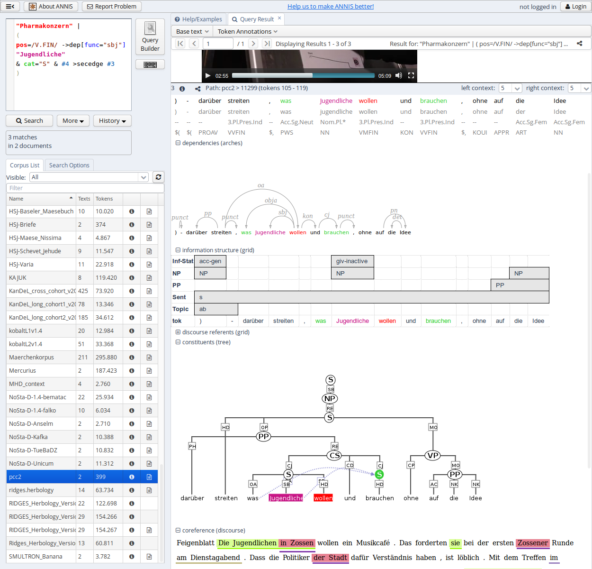
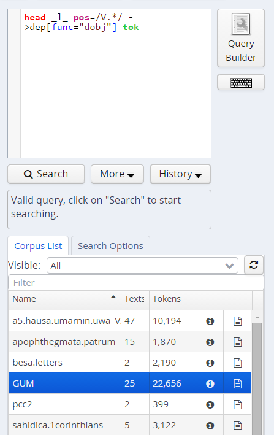
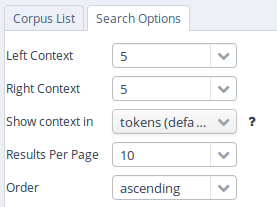
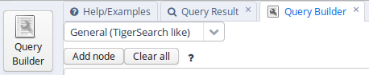
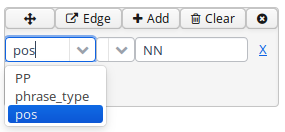
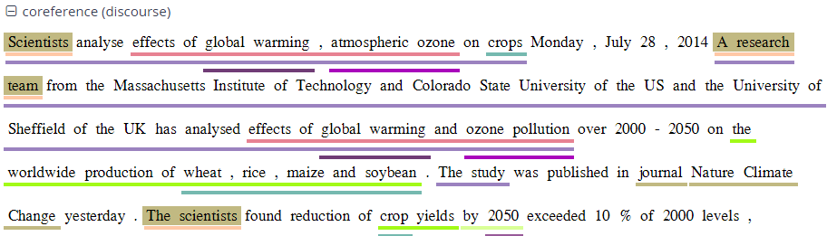
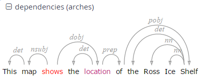
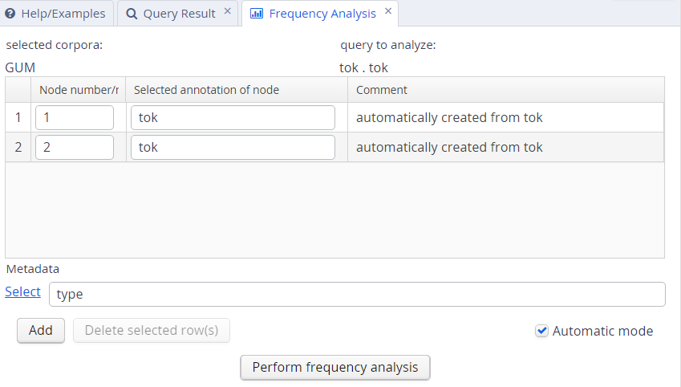
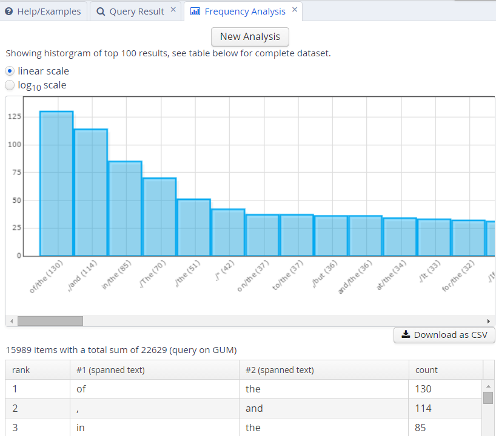
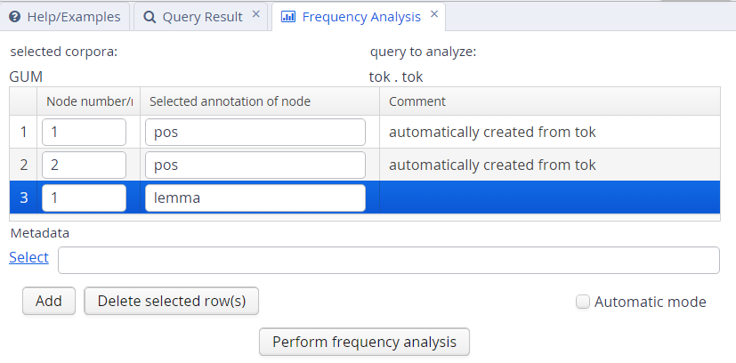

Introduction
ANNIS is an open source, browser-based search and visualization architecture for multi-layer corpora. It can be used to search for complex graph structures of annotated nodes and edges forming a variety of linguistic structures, such as constituent or dependency syntax trees, coreference, rhetorical structure and parallel alignment edges, span annotations and associated multi-modal data (audio/video).
In this online help, you can learn more about how to use the ANNIS interface and the query language AQL. Additional documentation is available from the homepage at http://corpus-tools.org/annis/documentation.html.
Using the ANNIS interface
The ANNIS interface is comprised of several areas, the most important of which are the search form on the left side and the results tab on the right side.

Search Form

The Search Form can be found on the left of the interface window. It's bottom part shows the list of currently available corpora. By clicking on the line with the corpus name, it is possible to select which corpora should be searched in (hold down 'ctrl' to select multiple corpora simultaneously). You may also configure groups of corpora or type in the filter box to view subsets of the corpora.
The "AQL" field at the top of the form is used for inputting queries manually (see the tutorials on the ANNIS Query Language from the ANNIS website). As soon as one or several corpora are selected and a query is entered or modified, the query will be validated automatically and possible errors in the query syntax will be commented on in the "Status" box below (which says "valid query" in the image above).
Once a valid query has been entered, pressing the "Search" button will retrieve the number of matching positions and documents in the selected corpora in the Status box and open the Result tab to display the first set of matches.

In order to get more control over the search you can click on "Search Options" to unfold more detailed search options. The context surrounding the matching expressions in the result list ist determined by the "Left Context" and "Right Context" options and can be changed on each side (by default up to 20 tokens). You can also configure how many results are shown per page, what order results are shown in (ascending, descending or random) and for some corpora, you can select alternative segmentation layers to visualize data (relevant for languages with multiple tokens per word form, etc., such as Arabic). Entire texts can also be viewed using special document visualizations or by clicking on the document icon next to each corpus name, if available.
The "Query Language" option allows to switch between the default AQL dialect and an compatibility mode emulating the behavior of the older ANNIS3. Make sure to use the latest version for all new queries.
Result Window

The result window shows search results in pages of 10 hits each by default (this can be changed in the Search Form). The toolbar at the top of the window allows you to navigate between these pages. The "Token Annotations" button on the toolbar allows you to toggle the token based annotations, such as lemmas and parts-of-speech, on or off for you convenience. You can use hyperlinks to your queries by copying the current browser URL for e-mail or citation purposes, allowing others to reproduce your query.
If your corpus contains multiple alternative text layers or segmentations (e.g. normalized and un-normalized text), you may switch between these on the fly by using the "base text" menu.

The result list itself initially shows a KWIC (key word in context) concordance of matching positions in the selected corpora, with the matching regions marked in color and the context in black on either side. Colors in the result match the colors of search expressions in the search box (red for the search item #1, purple for #2, etc.).
Context can be adjusted for individual search results up to the maximum allowed for the current corpus. Token annotations are displayed in gray under each token, and hovering over them with the mouse will show the annotation name and namespace. More complex annotation levels can be expanded, if available, by clicking on the plus icon next to the level's name, e.g. dependencies and referent information for the annotations in the dependency tree and grid views in the picture below.

Query Builder
To open the graphical query builder, click on the Query Builder button. On the left-hand side of the toolbar at the top of the query builder canvans, you will see the Add Node button. Use this button to define nodes to be searched for (tokens, non-terminal nodes or annotations). Creating nodes and modifying them on the canvas will immediately update the AQL field in the Search Form with your query, though updating the query on the Search Form will not create a new graph in the Query Builder.

In each node you create you may click on to specify an
annotation value. The annotation name can be typed in or selected from a drop down list once a corpus is
selected. The operator field in the middle allows you to choose between
an exact match (the '=' symbol) or wildcard search using Regular
Expressions (the '~' symbol). The annotation value is given on the
right, and should NOT be surrounded by quotations (see the example
below). It is also possible to specify multiple annotations applying to
the same position by clicking on
multiple times. Clicking on  will delete the values in the node. To search
for word forms, simply choose "tok" as the field name on the left. A
node with no data entered will match any node, that is an underspecified
token or non-terminal node or annotation.
will delete the values in the node. To search
for word forms, simply choose "tok" as the field name on the left. A
node with no data entered will match any node, that is an underspecified
token or non-terminal node or annotation.

To specify the relationship between nodes, first click on the "Edge"
link at the top left of one node, and then click the "Dock" link which
becomes available on the other nodes. An edge will connect the nodes
with an extra box from which operators may be selected (see below). For
operators allowing additional labels (e.g. the dominance operator >
allows edge labels to be specified), you may type directly into the
edge's operator box, as in the example with a "func" label in the
image below. Note that the node clicked on first (where the "Edge"
button was clicked) will be the first node in the resulting quey, i.e.
if this is the first node it will dominate the second node (#1 > #2)
and not the other way around, as also represented by the arrows along
the edge.

ANNIS Query Language (AQL)
ANNIS comes with its own query language called ANNIS Query Language (AQL). AQL is based on the concept of searching for annotation attributes and relations between them.
Searching for Word Forms
To search for word forms in ANNIS, simply select a corpus (in this example the freely available GUM corpus) and enter a search string between double quotation marks, e.g.:
"do"
Note that the search is case sensitive, so it will not find cases of
capitalized 'Do', for example at the beginning of a sentence. In order
to find both options, you can either look for one form OR the other
using the pipe sign ( | ):
"do" | "Do"
or else you can use regular expressions, which must
be surrounded by slashes ( / ) instead of quotation marks:
/[Dd]o/
To look for a sequence of multiple word forms, enter your search terms
separated by & and then specify that the relation between the elements
is one of precedence, as signified by the period ( . )
operator:
"do" & "n't" & #1 . #2
The expression #1 . #2 signifies that the first element ("do")
precedes the second element ("n't"). Alternatively, you can also place
the operator directly between the search elements as a shortcut. The
following shortcut query is equivalent to the one above:
"do" . "n't"`
For indirect precedence (where other tokens may stand between the
search terms), use the .* operator:
/[Dd]o/ & "n't" & "any" & #1 . #2 & #2 .* #3
OR using shortcuts:
/[Dd]o/ . "n't" .* "any"
The queries above find sequences beginning with the token "Do" or "do", followed directly by "n't", which must be followed either directly or indirectly (.*) by "any". A range of allowed distances can also be specified numerically as follows:
/[Nn]ot/ & "all" & #1 .1,5 #2
OR:
/[Nn]ot/ .1,5 "all"
Meaning the two words "not" and "all" may appear at a distance of 1 to 5
tokens. The operator .* allows a distance of up to 50 tokens by
default, so searching with .1,50 is the same as using .* instead.
Greater distances (e.g. .1,100 for 'within 100 tokens') should always
be specified explicitly.
Finally, we can add metadata restrictions to the query, which filter out
documents not matching our definitions. Metadata attributes must be connected to
other non-meta attributes with the @* (part-of) operator:
"want" & "to" & #1 .1,5 #2
& type="interview" & #1 @* #2
To view metadata for a search result or for a corpus, press the "i" icon next to it in the result window or in the search form respectively.
Searching for Annotations
Annotations may be searched for using an annotation name and value. The
names of the annotations vary from corpus to corpus, though many corpora
contain part-of-speech and lemma annotations with the names pos and
lemma respectively (annotation names are case sensitive). For
example, to search for all forms of the verb be in the GUM corpus,
simply select the GUM corpus and enter:
lemma="be"
Negative searches are also possible using != instead of =. For negated
tokens (word forms) use the reserved attribute tok. For example:
lemma!="be"
or:
tok!="be"
Metadata attributes can also be negated:
lemma="be" @* type!="interview"
To only find finite forms of a verb in GUM, use the part-of-speech (pos) annotation concurrently with lemma, and specify that both the lemma and pos should apply to the same element. For example for inflected forms of the verb give:
lemma="give" & pos=/VV.+/ & #1 _=_ #2
OR (using a shortcut):
lemma="give" _=_ pos=/VV.+/
The regular expression /VV.+/ means a part of speach that begins with
VV (verb), but has additional characters (.+), such as for past tense
(VVD) or gerund (VVG). The expression #1 _=_ #2 uses the span identity
operator to specify that the first annotation and the second annotation
apply to exactly the same position in the corpus.
Annotations can also apply to longer spans than a single token: for
example, in GUM, the annotation entity signifies the entity type of a
discourse referent. This annotation can also apply to phrases longer
than one token. The following query finds spans containing a discourse
referent who is a person:
entity="person"
If the corpus contains more than one annotation type named entity, a
namespace may be added to disambiguate these annotations (for example,
the entity annotation in the GUM corpus has the namespace ref:, so we
can search for ref:entity="person"). The namespace may always be
dropped, but if there are multiple annotations with the same name but
different namespaces, dropping the namespace will find all of those
annotations. If you drop the value of the annotation, you can also
search for any corpus positions that have that annotation, without
constraining the value. For example, the following query finds all
annotated entities in the GUM corpus, whether or not they are a person:
entity
In order to view the span of tokens to which the entity annotation applies, enter the query and click on "Search", then open the referents layer to view the grid containing the span.
Further operators can test the relationships between potentially
overlapping annotations in spans. For example, the operator _i_
examines whether one annotation fully contains the span of another
annotation (the i stands for 'includes'):
head & infstat="new" & #1 _i_ #2
OR (using a shortcut):
head _i_ infstat="new"
This query finds information structurally new discourse referents
(infstat="new") contained within headings (head).
Searching using Regular Expressions
When searching for word forms and annotation values, it is possible to
employ wildcards as placeholders for a variety of characters, using
Regular Expression syntax (see e.g.
http://www.regular-expressions.info/ for detailed information).
To search for wildcards use slashes instead of quotation marks to
surround your search term. For example, you can use the period (.)
to replace any single character:
tok=/ca./
This finds word forms such as "cat", "can", "car", "cap" etc. It is also
possible to make characters optional by following them with a question
mark (?). The following example finds cases of "car" and "cart",
since the "t" is optional:
tok=/cart?/
It is also possible to specify an arbitrary number of repetitions, with
an asterisk (*) signifying zero or more occurrences and a plus
(+) signifying at least one occurrence. For example, the first query
below finds "o", "of", and "off" (since the asterisk means zero or more
times the preceding "f"), while the second finds "of" and "off", since
at least one "f" must be found:
tok=/of*/
tok=/of+/
It is possible to combine these operators with the period operator to mean any number of occurrences of an arbitrary character. For example, the query below searches for pos (part-of-speech) annotations that begin with "VV", corresponding to all forms of lexical verbs (the auxiliaries "be" and "have" are tagged VB... and VH... respectively). The string "VV" means that the result must begin with "VV", the period stands for any character, and the asterisk means that 'any character' can be repeated zero or more time, as above.
pos=/VV.*/
This finds both finite verbs ("VVZ", "VVP", "VVD") and non-finite ones ("VV") or gerunds ("VVG"). It is also possible to search for explicit alternatives by either specifying characters in square brackets or longer strings in round brackets separated by pipe symbols. The first example below finds either "of" or "on" (i.e. "o" followed by either "f" or "n") while the second example finds lemma annotations that are either "be" or "have".
tok=/o[nf]/
lemma=/(be|have)/
Finally, negative searches can be used as usual with the exclamation point, and regular expressions can generally be used also in edge annotations. For example, if we search for trees (see also Searching for Trees) where a lexical verb dominates another token with a dependency edge not containing 'obj', we can use a wildcard to rule out all edges labels containing those letters. This will give us all non-object dependants of lexical verbs:
pos=/VV.*/ & tok & #1 ->dep[func!=/.*obj.*/] #2
OR (using a shortcut):
pos=/VV.*/ ->dep[func!=/.*obj.*/] tok
Searching for Trees
In corpora containing hierarchical structures, annotations such as syntax trees can be searched for by defining terminal or none-terminal node annotations, functional dependencies and their values (for dependencies see see Searching for Pointing Relations). A simple search for prepostional phrases in the GUM corpus looks like this:
const:cat="PP"
If the corpus contains no more than one annotation called cat, the
optional namespace, in this case const:, may be dropped. This finds
all PP nodes in the corpus. You can also search for the NP being
dominated by the PP like this:
cat="PP" & cat="NP" & #1 > #2
OR (using a shortcut):
cat="PP" > cat="NP"
To find all PP nodes directly dominating an adverb, you can combine a search for syntactic category and part-of-speech (pos) values (in this case "RB" for adverb). The query below gives the shortcut form:
cat="PP" > pos="RB"
The operator > signifies direct dominance, which must hold between the first and the second element. Once the Query Result tab is shown you may open the "constituents" annotation layer to see the corresponding tree.

Note that since the context is set to a number of tokens left and right of the search term, the tree for the whole sentence may not be retrieved, though you can change the amount of tokens at the top of each search result, or for all search results in the Search Options tab. To make sure that the whole clause is always included, you may want to specifically search for the clause or sentence dominating the PP. To do so, specify the sentence in another element and use the indirect dominance ( >* ) operator:
cat="ROOT" >* cat="PP" > pos="RB"
If the annotations in the corpus support it, you may also look for edge
labels. Using the following query will find all adverbial modifier NPs,
dominated by some node through an edge labeled ADV. Since we do not know
anything about the modified node, we simply use the node element as a
place holder. This element can match any node or annotation in the
graph:
node >[const:func="ADV"] cat="NP"
Again, the namespace const: is optional and only important if there
are multiple 'func' annotations. It is also possible to negate the label
of the dominance edge as in the following query:
cat >[func!="TMP"] cat
which finds all syntactic categories (value unspecified) dominating another syntactic category with a label other than "TMP".
Searching for Pointing Relations
Pointing relations are used to express an arbitrary directed
relationship between two elements (terminals or non-terminals) without
implying dominance or coverage inheritance. For instance, in the GUM
corpus, elements in the ref: namespace may point to each other to
express coreference or anaphoric relations. The following query searches
for two entity annotations, which specify whether a discourse referent
is a person, or an animal, a location, an object, an abstract etc.
entity="person" & entity!="person" & #1 ->coref #2
Using the pointing relation operator -> with the type coref, the
first entity, which should be a person, is said to be coreferent with
its antecedent, the second entity, which is not a person. In practice,
this will usually occur due to "bridging", where something like a whole
(e.g. an organization such as a 'research team') implies the existence
of its part (e.g. persons, such as 'the scientists'). To see a
visualization of the coreference relations, open the coreference
annotation layer in the GUM corpus. In the image below, one of the
matches for the above query is highlighted in red (die Seeburger und
einige Groß-Glienicker ... sie 'the Seeburgers and some
Groß-Glienickers... they'). Other discourse referents in the text
(marked with an underline) may be clicked on, causing coreferential
chains containing them to be highlighted as well. Note that discourse
referents may overlap, leading to multiple underlines: Die Seeburger
'the Seeburgers' is a shorter discourse referent overlapping with the
larger one ('the Seeburgers and some Groß-Glienickers'), and each
referent has its own underline. Annotations of the coreference edges of
each relation can be viewed by hovering of the appropriate underline.

The pointing relation operator can also search for longer chains of coreference, using the asterisk extension shown below:
entity="organization" ->coref* entity="person"
This finds all organizations that point back to a person at any point along the preceding coreference chain. It is also possible to specify annotations of pointing relations, which for coreference in the GUM corpus mark what kind of coreference is used: anaphoric, cataphoric, lexical coreference, apposition, or bridging. To find appositions of place entities, use the following query:
entity="place" ->coref[type="appos"] entity="place"
Another way to use pointing relations is found in syntactic dependency trees. The queries in this case can use both pointing relation types and annotations too, as in the following query:
pos=/VV[PZ]/ & tok & #1 ->dep[func="dobj"] #2
OR (using a shortcut):
pos=/VV[PZ]/ ->dep[func="dobj"] tok
This query searches for a present tense lexical verb (with the
part-of-speech VVZ or VVP) and a token, with a pointing relation of the
type 'dep' (for dependency) between the two, annotated with
func="dobj" (the function 'direct object'). The result can be viewed
with the arch dependency visualizer, which shows the verb 'shows' and
its object 'location'.

Exporting Results
To export search results, open the menu "More" between the Search and History buttons and select "Export":

Enter the query whose results you want to export as usual in the AQL box. Note that you do not need to carry out the query first. You can enter the query and export without pressing Search before. Several exporter modules can be selected from the Export tab shown below.

The SimpleTextExporter simply gives the text for all tokens in each search result, including context, in a one-row-per-hit format. The tokens covered by the match area are marked with square brackets and the results are numbered, as in the following example:
0. of the International Brotherhood of [Magicians] Wednesday , October 9 ,
1. Magic Month in the United [States] . Wikinews spoke with William
2. of the International Brotherhood of [Magicians] , about the current state
3. - " Scarne on Card [Tricks] " and " Scarne on
4. and " Scarne on Magic [Tricks] " . That started me
The TokenExporter adds all annotations of each token separated by slashes (e.g. dogs/NNS/dog for a token dogs annotated with a part-of-speech NNS and a lemma dog).
The GridExporter adds all annotations available for the span of
retrieved tokens, with each annotation layer in a separate line.
Annotations are separated by spaces and the hierarchical order of
annotations is lost, though the span of tokens covered by each
annotation may optionally be given in square brackets (to turn this off
use the optional parameter numbers=false in the ‘Parameters’ box). The
user can specify annotation layers to be exported in the additional
‘Annotation Keys’ box, and annotation names should be separated by
comas, as in the image above. Metadata annotations can also be exported
by entering “metakeys=” and a list of comma separated metadata names in
the Parameters box. If nothing is specified, all available annotations
and no metadata will be exported. Multiple options are separated by a
semicolon, e.g. the Parameters metakeys=type,docname;numbers=false. An
example output with token numbers and the part of speech (pos) and
syntactic category annotations looks as follows.
0. tok of the International Brotherhood of Magicians Wednesday
pos IN[1-1] DT[2-2] NP[3-3] NP[4-4] IN[5-5] NPS[6-6] NP[7-7]
cat S[1-6] VP[1-6] NP[1-6] PP[1-6] NP[2-4] PP[5-6] NP[6-6] NP[7-12]
Meaning that the annotation cat="NP" applies to tokens 1-6 in the search result, and so on. Note that when specifying annotation layers, if the reserved name 'tok' is not specified, the tokens themselves will not be exported (annotations only).
The WekaExporter outputs the format used by the WEKA machine learning tool. Only the attributes of the search elements (#1, #2 etc. in AQL) are outputted, and are separated by commas. The order and name of the attributes is declared in the beginning of the export text, as in this example:
@relation name
@attribute #1_id string
@attribute #1_span string
@attribute #1_anno_const:cat string
@attribute #2_id string
@attribute #2_span string
@attribute #2_anno_GUM:claws5 string
@attribute #2_anno_GUM:lemma string
@attribute #2_anno_GUM:pos string
@data
'11318611','the current state','NP','11318616','current','AJ0','current','JJ'
'11318686','magic','NP','11318688','magic','AJ0','magic','JJ'
'11318757','some basic tricks','NP','11318760','basic','AJ0','basic','JJ'
The export shows the properties of an NP node dominating a token with the part-of-speech JJ. Since the token also has other attributes, such as the lemma and part of speech tags, these are also retrieved.
It is also possible to output metadata annotations per hit using the WekaExporter. To do so, use the parameter metakeys=meta1,meta2 etc. For example, if your documents have a metadata annotation called 'genre', you may export it for each search result as a further column using metakeys=genre in the parameters box.
The CSVExporter behaves much like the WekaExporter, except that the Weka header specifying the content of the columns is not used (useful for importing into spreadsheet programs such as Excel or Calc).
Note that exporting may be slow if the result set is large.
Frequency Analysis
To perform a frequency analysis, enter the query whose results you want to analyze as usual in the AQL box. Note that you do not need to carry out the query first. Next, open the menu “More” between the Search and History buttons and select “Frequency Analysis”:
The interface will open the frequency analysis tab shown below. Initially, rows will be generated for the nodes present in the query. For example, two rows are automatically generated for the following query, which finds any pair of consecutive tokens:
tok . tok

Clicking on “Perform frequency analysis” will produce a breakdown of all consecutive token bigrams in the corpus. The frequency graph will only show the first 500 elements, but the table below it will give the entire list of values, which can also be exported as a CSV file.

To edit the analysis or analyze a new query, click the New Analysis button. It is also possible to add annotations to the analysis that were not in the original query, provided that these are expected to belong to some other node in the query. For example, the tokens in the GUM corpus also have part-of-speech and lemma information. We can replace the lines in the analysis specifying that tok values should be counted with pos values, which gives us part-of-speech bigrams. We can also add a lemma annotation belonging to the first search element, by clicking the Add button and entering the node definition number and annotation name we are interested in:

As a result, we will get a count for each combination of values grouped by the first and second tokens' parts-of-speech, as well as the first token's lemma.
Complete List of Operators
AQL currently includes the following operators:
| Operator | Description | Illustration | Notes | |
|---|---|---|---|---|
. | direct precedence |  | For non-terminal nodes, precedence is determined by the right-most and left-most terminal children. In corpora with multiple segmentations the layer on which consecutivity holds may be specified with .layer | |
.* | indirect precedence |  | For specific sizes of precedence spans, .n,m can be used, e.g. .3,4 - between 3 and 4 token distance; the default maximum distance for .* is 50 tokens. As above, segmentation layers may be specified, e.g. .layer,3,4 | |
^ | directly near | or | Same as precedence, but in either order. In corpora with multiple segmentations the layer on which consecutivity holds may be specified with ^layer | |
^* | indirectly near | or | Like indirect precedence in either order. The form ^n,m can be used, e.g. ^3,4 - between 3 and 4 token distance; the default maximum distance for ^* is 50 tokens. As above, segmentation layers may be specified, e.g. ^layer,3,4 | |
> | direct dominance |  | A specific edge type may be specified, e.g. >secedge to find secondary edges. Edge labels are specified in brackets, e.g. >[func="OA"] for an edge with the function 'object, accusative' | |
>* | indirect dominance | For specific distance of dominance, >n,m can be used, e.g. >3,4 - dominates with 3 to 4 edges distance | ||
@* | part of sub-corpus | Left attribute is part of a sub-corpus having the attribute of the right-hand side. For specific distance range in the sub-corpus hierarchy, @n,m can be used. | ||
_=_ | identical coverage |  | Applies when two annotations cover the exact same span of tokens | |
_i_ | inclusion | Applies when one annotation covers a span identical to or larger than another | ||
_o_ | overlap |  | ||
_l_ | left aligned |  | Both elements span an area beginning with the same token | |
_r_ | right aligned | Both elements span an area ending with the same token | ||
== | value identity | A = B | The value of the annotation or token A is identical to that of B (this operator does not bind, i.e. the nodes must be connected by some other criteria too) | |
!= | value difference | A ≠ B | The value of the annotation or token A is different from B (this operator does not bind, i.e. the nodes must be connected by some other criteria too) | |
->LABEL | labeled pointing relation |  | A labeled, directed relationship between two elements. Annotations can be specified with ->LABEL[annotation="VALUE"] | |
->LABEL * | indirect pointing relation |  | An indirect labeled relationship between two elements. The length of the chain may be specified with ->LABEL n,m for relation chains of length n to m | |
#x:arity=n | arity | Specifies the amount of directly dominated children that the searched node has | ||
_ident_ | node identity | True for two attributes that belong to the same node |
Unsupported operators
The following operators have been available in the legacy version ANNIS3, but are not yet implemented in the newest ANNIS version.
| Operator | Description | Illustration | Notes |
|---|---|---|---|
_ol_ and _or_ | Overlap, but only on the left or right side | ||
>@l | left-most child |  | |
>@r | right-most child |  | |
$ | common parent node | ||
$* | common ancestor node | ||
#x:tokenarity=n | tokenarity | Specifies the length of the span of tokens covered by the node | |
#x:root | root |  | Specifies that the node is not dominated by any other node within its namespace s |
Differences in Compatibility Mode
Previous versions of ANNIS might have a slightly different interpretation of the semantics of AQL. By choosing the compatibility mode in the search options, you can emulate the old behavior. The compatibility mode (also called "quirks mode") has the following differences to the standard AQL semantics.
Indirect Precedence is limited to a maximum distance of 50
Indirect precedence (.*) was limited to a maximum distance of 50 in older versions for performance reasons.
E.g. the query tok .* tok is effectively tok .1,50 tok.
Depending on the text length of the documents, the compatibility mode might return fewer matches than the normal mode.
Non-reflexive operator is only applied locally
The operands of non-reflexive operators must be different. In standard AQL, a new match can be only included if the new match is different to all other matches. In contrast, the compatibility mode only enforces direct non-reflexivity. E.g. in the query
node & node & node & #1 _o_ #2 & #2 _o_ #3
the first node must be different from the second node and the second node must be different from the third.
In compatibility mode, it is allowed that #1 and #3 reference the same match because there is no
non-reflexive operator directly between them.
You would need to change the query to
node & node & node & #1 _o_ #2 & #2 _o_ #3 & #1 _o_ #3
to enforce that these operand are not the same.
The standard mode will not include a match if #1 and #3 reference the same match per default.
This does not affect the addition of matches if the operator is reflexive.
meta:: is still allowed
Meta data constraints have been replaced with the part-of operator @* and will result
in a syntax error for the normal query mode.
In the compatibility mode, meta:: is still allowed.
Be aware that meta data constraints like meta::doc="mydocumentname" are applied to all conjunctions of the disjunction, which is seems counter-intuitive.
E.g the query.
(pos="NN" | lemma="be" & meta::age="20")
effectively becomes
(pos="NN" & meta::age="20" | lemma="be" & meta::age="20")